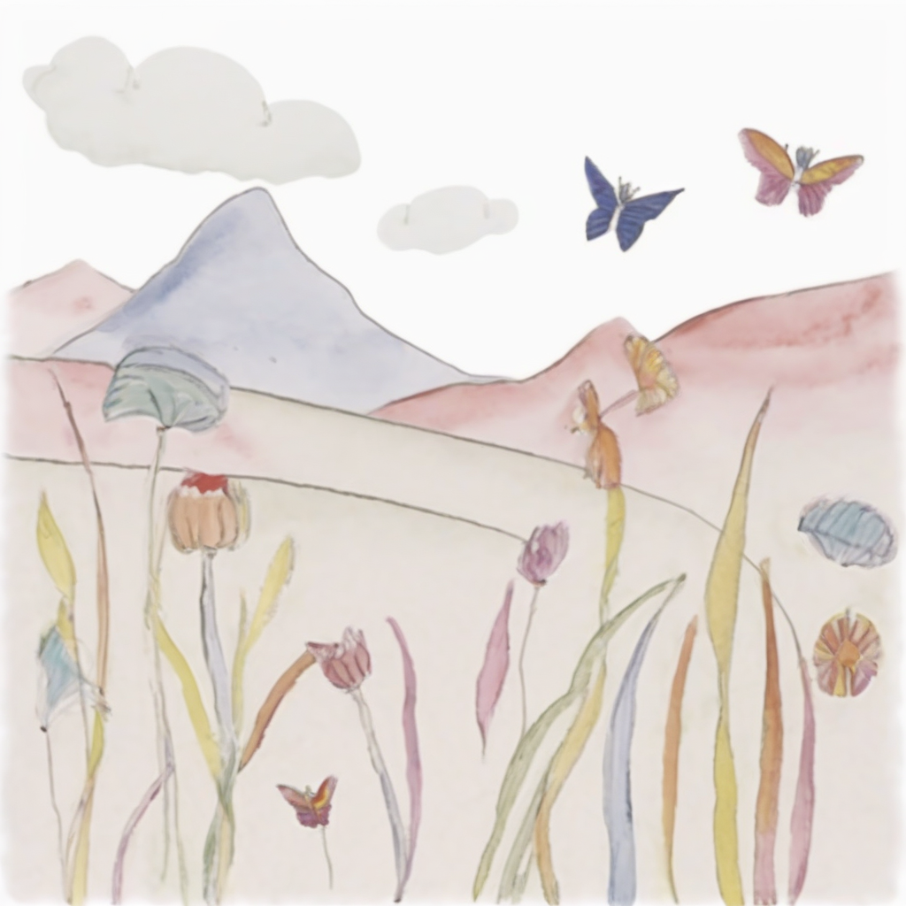
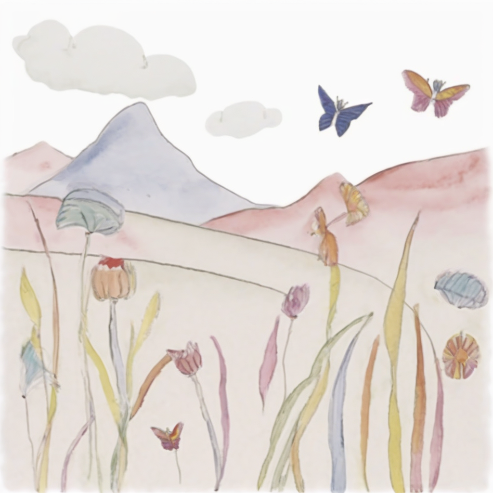

Method

We propose FairyGen, an automatic system for generating story-driven cartoon videos from a single child’s drawing, while faithfully preserving its unique artistic style. Unlike previous storytelling methods that primarily focus on character consistency and basic motion, FairyGen explicitly disentangles character modeling from stylized background generation and incorporates cinematic shot design to support expressive and coherent storytelling. Given a single character sketch, we first employ a Multimodal Large Language Model (MLLM) to generate a structured storyboard with shot-level descriptions that specify environment settings, character actions, and camera designs. To ensure visual consistency, we introduce a style propagation adapter that captures the character’s visual style and applies it to the background, faithfully retaining the character’s full visual identity while synthesizing style-consistent scenes. A shot design module further enhances visual diversity and cinematic quality through frame cropping and multi-view synthesis based on the storyboard. To animate the story, we reconstruct a 3D proxy of the character to derive physically plausible motion sequences, which are then used to fine-tune an MMDiT-based image-to-video diffusion model. We further propose a two-stage motion customization adapter: the first stage learns appearance features from temporally unordered frames, disentangling identity from motion; the second stage models temporal dynamics using a timestep-shift strategy with frozen identity weights. Once trained, FairyGen directly renders diverse and coherent video scenes aligned with the storyboard. Extensive experiments demonstrate that our system produces animations that are stylistically faithful, narratively structured, and rich in smooth, natural motion, highlighting its potential for personalized and engaging story animation.
A robot stands on the edge of a tall city rooftop, ready to jump down to the street below. The robotfirst extends its arms, then jumps upward. As the robot drops, the building walls and city skyline move past in the background. The robot lands freely on the pavement, with its arms touching the ground, as dust and debris scatter slightly upon landing.
MEVG (ECCV 24)
Vlogger (CVPR 24)
Ours


 



prompt: A robot is walking through a corridor in a futuristic spaceship.
Train Data
DreamVideo (CVPR 24)
Ours


Dynamic foreground motion over a static background due to the video diffusion model's unpredictability.
BibTex Code Here